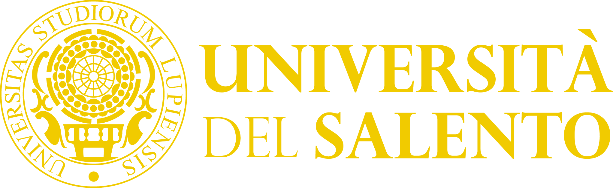

Digital supplement to the PhD thesis by Cesare Iezzi, ‘I modellini architettonici nell’Egitto Greco-Romano: progetto per cantiere o oggetto votivo?’ (Università del Salento, sup. Prof. Paola Davoli).
It features original, continuously updated 3D models created during this research for visual and metric analysis.